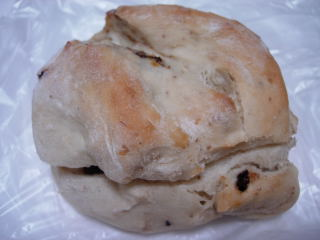
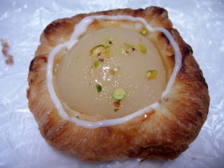
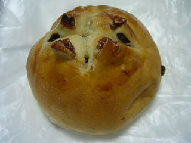
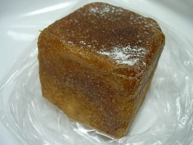
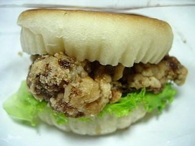
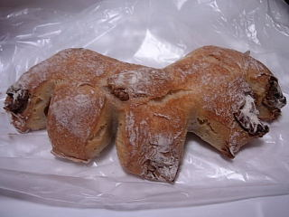
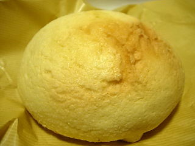

パリクロアッサンの練乳いちじく
2010/6/22
甘くて美味しい練乳いちじくです。

パンと練乳クリームはよく合いますね。どっしりと重たいパンなので、練乳が甘くても味が濃くなり過ぎず良かったす。中に入っているイチジクは量が多くないので、イチジク味が強くなく、なんとなくレーズンパンな感じでした。
これは白桃レアチーズクリームデニッシュです。

名前の通りのパンです。桃が半分入っているので、桃味がしっかり味わえました。
チーズ味は軽かったです。
買い物しらた、新商品のクーポン券がもらえました。さすが大手パン製造メーカーって思いました。
パリクロアッサンの田舎パン
2009/12/1
火曜日の特売ってことで、平台の上に105円のパンが沢山並んでました。
その中で私が一番いいかなって思ったのが田舎パンでした。

レーズンパンなんですけど、レーズン多めで甘くて美味しかったです。
お菓子にいいですね。
パリクロアッサンの生キャラメリーゼ
2009/5/2
チョッと流行ってる系のパンです。似たような商品が色々あって雑誌なんかに載ってたりしますね。

パンはバターが効いてて、味がしっかりとしていて美味しかったです。
パンの中にはキャラメル風のクリームが入ってました。キャラメル味でもクリーム味でもない不思議な味でした。
パリクロアッサンのジューシーチキンの南蛮サンド
2009/4/22
鳥肉の南蛮揚げがどーんと入ったサンドです。

鶏肉で皮も有るので、ガブっと噛んでもきれいに噛み切れないのでちょっと食べにくいですね。から揚げで味が付いているんですが、その上にマヨネーズが入っているので、とってもジューシーで美味しかったです。濃い系です。
パリクロアッサンのクルミ
2009/1/3
夜に買い物に行ったら、なんと110円でパンが販売してました。安いですね。
クルミパンは普段200円もするので半額近いです。これだったら普段なかなか買えないなーって思ってた高い値段のパンが買えちゃいますね。しかも今日はパンの種類が沢山あり、選び放題でした。
何時から安売りするかは分からないですが、夜に寄る機会があったら要チェックです。

くるみぱんは固い系のぱんで、パンの味がしっかりあり、食べ応えがありました。

これはメイプルメロンパンです。とってもふんわりとしてて軽いなって思ったら、真ん中に大きな空洞があり、そこにクリームっぽいメープルが入ってました。そんなに甘くなくて、マイルドな感じでした。